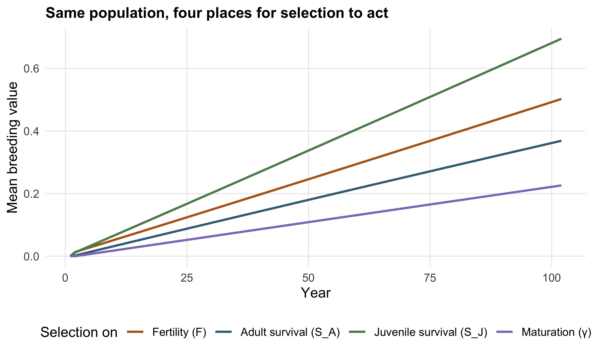
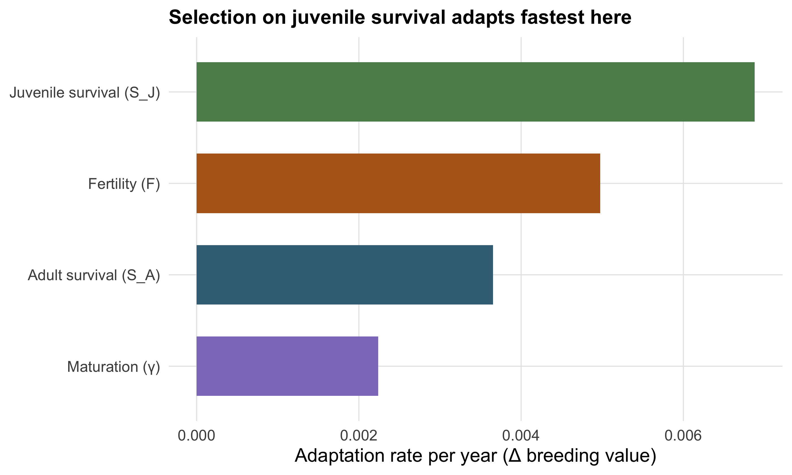
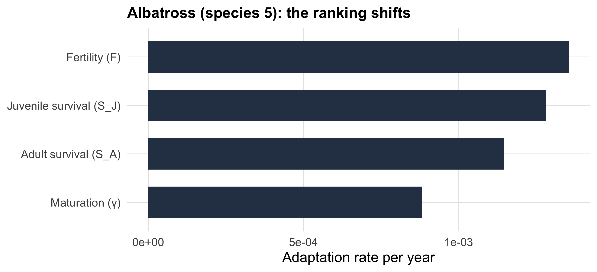

run_scenario <- function(rate, sp = 3) {
MPM(
h2 = 0.2, Vp = 1, Beta = 0.15,
Fe = species$F[sp], SA = species$SA[sp], SJ = species$SJ[sp],
S0 = species$SJ[sp], Y = species$gamma[sp],
selectedrate = rate
)
}
rates <- c("Fe", "SJ", "SA", "Y")
runs <- set_names(rates) |> map(run_scenario) # one MPM run per vital rate3 Selection scenarios
NoteWhat you’ll be able to do
Put selection on each of the four vital rates in turn, run all the scenarios with a helper function, and read off which vital rate produces the fastest adaptation for a given species.
Selection does not have to act on fertility. The selectedrate argument lets you choose which vital rate the trait influences: "Fe" (fertility), "SJ" (juvenile survival), "SA" (adult survival) or "Y" (maturation). Everything else stays the same — so any difference we see is about the life cycle position of the trait, not about the genetics.
NoteA note on terminology: fecundity vs fertility
The paper distinguishes fecundity (\(f\), the per-capita number of offspring an adult produces) from fertility (\(F\), the adults’ contribution to the juvenile class at the next census, with \(F = f\,S_0\) in a pre-breeding cycle). The two are easy to conflate; the "Fe" pathway concerns the production of offspring.
We’ll work with species 3 (an intermediate, deer-like life history) so all four scenarios are well behaved.
3.1 A helper to run one scenario
Rather than copy-paste the call four times, wrap it once and vary only selectedrate:
runs is now a named list of four projections. We bind their yearly timelines into one tidy frame:
prop_all <- imap_dfr(runs, \(out, rate)
out$properties_per_year |> mutate(selected = rate)
)3.2 Which rate moves the trait fastest?
ImportantYour turn — predict first
Same species, same heritability, same selection strength — only the target vital rate differs. Which of fertility, juvenile survival, adult survival or maturation do you think will drive the fastest genetic change per year? Commit to a ranking before you look.
ggplot(prop_all, aes(year, M_EBVS, colour = selected)) +
geom_line(linewidth = 0.9) +
scale_colour_manual(values = vital_pal, labels = vital_lab, name = "Selection on") +
labs(x = "Year", y = "Mean breeding value",
title = "Same population, four places for selection to act")
The slopes differ markedly. To compare them as numbers, each run already reports the realised adaptation rate per year in out$V:
adapt_rate <- tibble(
selected = rates,
rate_label = vital_lab[rates],
per_year = map_dbl(runs, "V"),
gen_time = map_dbl(runs, "T_GEN")
) |>
mutate(per_generation = per_year * gen_time) |>
arrange(desc(per_year))
adapt_rate# A tibble: 4 × 5
selected rate_label per_year gen_time per_generation
<chr> <chr> <dbl> <dbl> <dbl>
1 SJ Juvenile survival (S_J) 0.00688 6.30 0.0433
2 Fe Fertility (F) 0.00497 6.30 0.0313
3 SA Adult survival (S_A) 0.00365 6.30 0.0230
4 Y Maturation (γ) 0.00224 6.30 0.0141adapt_rate |>
ggplot(aes(reorder(rate_label, per_year), per_year, fill = selected)) +
geom_col(width = 0.65) +
coord_flip() +
scale_fill_manual(values = vital_pal, guide = "none") +
labs(x = NULL, y = "Adaptation rate per year (\u0394 breeding value)",
title = "Selection on juvenile survival adapts fastest here")
TipKey idea
For most life histories, a trait acting on juvenile survival drives the fastest per-year adaptation, with fertility close behind — because both feed directly into recruitment, the part of the life cycle selection can turn over quickly. Selection on adult survival is the slowest to register, especially in short-lived species. This pattern is revisited, and qualified, in Chapter 4.
NoteA note on interpretation
The same value of Beta does not imply the same demographic response across vital rates or species. Differences among scenarios therefore reflect both the location of selection within the life cycle and the demographic importance of the affected vital rate. This is one reason why the original study considered several definitions of adaptation rate (Chapter 5).
3.3 Your turn — change the species
ImportantExercise
Re-run the four scenarios for the albatross (species 5) by calling run_scenario(rate, sp = 5) across rates. Does the ranking of vital rates change? Which rate now adapts fastest per year?
CautionSolution
runs5 <- set_names(rates) |> map(\(r) run_scenario(r, sp = 5))
tibble(
rate_label = vital_lab[rates],
per_year = map_dbl(runs5, "V")
) |>
ggplot(aes(reorder(rate_label, per_year), per_year)) +
geom_col(width = 0.65, fill = species_pal["5"]) +
coord_flip() +
labs(x = NULL, y = "Adaptation rate per year",
title = "Albatross (species 5): the ranking shifts")
For the long-lived albatross, selection on adult survival is no longer last — in long-lived species, adult survival carries much of the reproductive value, so a trait there matters more. The “best” vital rate to target is not universal; it depends on where the species sits on the slow–fast continuum, which is exactly the next chapter.